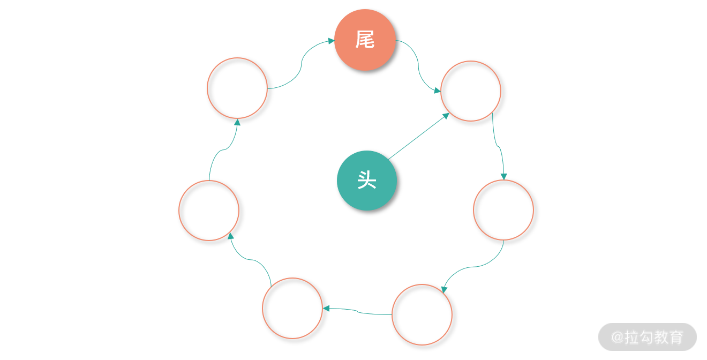

- 00 开篇词 为什么大厂面试必考操作系统？.md.html
- 00 课前必读 构建知识体系，可以这样做！.md.html
- 01 计算机是什么：“如何把程序写好”这个问题是可计算的吗？.md.html
- 02 程序的执行：相比 32 位，64 位的优势是什么？（上）.md.html
- 03 程序的执行：相比 32 位，64 位的优势是什么？（下）.md.html
- 04 构造复杂的程序：将一个递归函数转成非递归函数的通用方法.md.html
- 05 存储器分级：L1 Cache 比内存和 SSD 快多少倍？.md.html
- 05 (1) 加餐 练习题详解（一）.md.html
- 06 目录结构和文件管理指令：rm -rf 指令的作用是？.md.html
- 07 进程、重定向和管道指令：xargs 指令的作用是？.md.html
- 08 用户和权限管理指令： 请简述 Linux 权限划分的原则？.md.html
- 09 Linux 中的网络指令：如何查看一个域名有哪些 NS 记录？.md.html
- 10 软件的安装： 编译安装和包管理器安装有什么优势和劣势？.md.html
- 11 高级技巧之日志分析：利用 Linux 指令分析 Web 日志.md.html
- 12 高级技巧之集群部署：利用 Linux 指令同时在多台机器部署程序.md.html
- 12 (1)加餐 练习题详解（二）.md.html
- 13 操作系统内核：Linux 内核和 Windows 内核有什么区别？.md.html
- 14 用户态和内核态：用户态线程和内核态线程有什么区别？.md.html
- 15 中断和中断向量：Javajs 等语言为什么可以捕获到键盘输入？.md.html
- 16 WinMacUnixLinux 的区别和联系：为什么 Debian 漏洞排名第一还这么多人用？.md.html
- 16 (1)加餐 练习题详解（三）.md.html
- 17 进程和线程：进程的开销比线程大在了哪里？.md.html
- 18 锁、信号量和分布式锁：如何控制同一时间只有 2 个线程运行？.md.html
- 19 乐观锁、区块链：除了上锁还有哪些并发控制方法？.md.html
- 20 线程的调度：线程调度都有哪些方法？.md.html
- 21 哲学家就餐问题：什么情况下会触发饥饿和死锁？.md.html
- 22 进程间通信： 进程间通信都有哪些方法？.md.html
- 23 分析服务的特性：我的服务应该开多少个进程、多少个线程？.md.html
- 23 (1)加餐 练习题详解（四）.md.html
- 24 虚拟内存 ：一个程序最多能使用多少内存？.md.html
- 25 内存管理单元： 什么情况下使用大内存分页？.md.html
- 26 缓存置换算法： LRU 用什么数据结构实现更合理？.md.html
- 27 内存回收上篇：如何解决内存的循环引用问题？.md.html
- 28 内存回收下篇：三色标记-清除算法是怎么回事？.md.html
- 28 (1)加餐 练习题详解（五）.md.html
- 29 Linux 下的各个目录有什么作用？.md.html
- 30 文件系统的底层实现：FAT、NTFS 和 Ext3 有什么区别？.md.html
- 31 数据库文件系统实例：MySQL 中 B 树和 B+ 树有什么区别？.md.html
- 32 HDFS 介绍：分布式文件系统是怎么回事？.md.html
- 32 (1)加餐 练习题详解（六）.md.html
- 33 互联网协议群（TCPIP）：多路复用是怎么回事？.md.html
- 34 UDP 协议：UDP 和 TCP 相比快在哪里？.md.html
- 35 Linux 的 IO 模式：selectpollepoll 有什么区别？.md.html
- 36 公私钥体系和网络安全：什么是中间人攻击？.md.html
- 36 (1)加餐 练习题详解（七）.md.html
- 37 虚拟化技术介绍：VMware 和 Docker 的区别？.md.html
- 38 容器编排技术：如何利用 K8s 和 Docker Swarm 管理微服务？.md.html
- 39 Linux 架构优秀在哪里.md.html
- 40 商业操作系统：电商操作系统是不是一个噱头？.md.html
- 40 (1)加餐 练习题详解（八）.md.html
- 41 结束语 论程序员的发展——信仰、选择和博弈.md.html
- 捐赠
26 缓存置换算法： LRU 用什么数据结构实现更合理？
这一讲给你带来的面试题目是：LRU 用什么数据结构实现更合理？
LRU（最近最少使用），是一种缓存置换算法。缓存是用来存储常用的数据，加速常用数据访问的数据结构。有软件实现，比如数据库的缓存；也有硬件实现，比如我们上一讲学的 TLB。缓存设计中有一个重要的环节：当缓存满了，新的缓存条目要写入时，哪个旧条目被置换出去呢？
这就需要用到缓存置换算法（Cache Replacement Algorithm）。缓存置换应用场景非常广，比如发生缺页中断后，操作系统需要将磁盘的页导入内存，那么已经在内存中的页就需要置换出去。CDN 服务器为了提高访问速度，需要决定哪些 Web 资源在内存中，哪些在磁盘上。CPU 缓存每次写入一个条目，也就相当于一个旧的条目被覆盖。数据库要决定哪些数据在内存中，应用开发要决定哪些数据在 Redis 中，而空间是有限的，这些都关联着缓存的置换。
今天我们就以 LRU 用什么数据结构实现更合理，这道缓存设计题目为引，为你讲解缓存设计中（包括置换算法在内）的一些通用的思考方法。
理想状态
设计缓存置换算法的期望是：每次将未来使用频率最低的数据置换出去。假设只要我们知道未来的所有指令，就可以计算出哪些内存地址在未来使用频率高，哪些内存地址在未来使用频率低。这样，我们总是可以开发出理论上最高效的缓存置换算法。
再复习下缓存的基本概念，在缓存中找到数据叫作一次命中（Hit），没有找到叫作穿透（Miss）。假设穿透的概率为 M，缓存的访问时间（通常叫作延迟）是 L，穿透的代价（访问到原始数据，比如 Redis 穿透，访问到 DB）也就是穿透后获取数据的平均时间是 T，那么 M*T+L 可以看作是接近缓存的平均响应时间。L 通常是不变的，这个和我们使用了什么缓存相关。这样，如果我们知道未来访问数据的顺序，就可以把 M 降到最低，让缓存平均响应时间降到最低。
当然这只是美好的愿望，在实际工作中我们还不可能预知未来。
随机/FIFO/FILO
接下来我要和你讨论的 3 种策略，是对理想状态的一种悲观表达，或者说不好的设计。
比如说随机置换，一个新条目被写入，随机置换出去一个旧条目。这种设计，具有非常朴素的公平，但是性能会很差（穿透概率高），因为可能置换出去未来非常需要的数据。
再比如先进先出（First In First Out）。设计得不好的电商首页，每次把离现在时间最久的产品下线，让新产品有机会展示，而忽略销量、热度、好评等因素。这也是一种朴素的公平，但是和我们设计缓存算法的初衷——预估未来使用频率更高的数据保留在缓存中，相去甚远。所以，FIFO 的结构也是一种悲观的设计。
FIFO 的结构使用一个链表就能实现，如下图所示：

为了方便你理解本讲后面的内容，我在这里先做一个知识铺垫供你参考。上图中，新元素从链表头部插入，旧元素从链表尾部离开。 这样就构成了一个队列（Queue），队列是一个经典的 FIFO 模型。
还有一种策略是先进后出（First In Last Out）。但是这种策略和 FIFO、随机一样，没有太强的实际意义。因为先进来的元素、后进来的元素，还是随机的某个元素，和我们期望的未来使用频率，没有任何本质联系。
同样 FILO 的策略也可以用一个链表实现，如下图所示：
新元素从链表头部插入链表，旧元素从链表头部离开链表，就构成了一个栈（Stack），栈是一种天然的 FILO 数据结构。这里仅供参考了，我们暂时还不会用到这个方法。
当然我们不可能知道未来，但是可以考虑基于历史推测未来。经过前面的一番分析，接下来我们开始讨论一些更有价值的置换策略。
最近未使用（NRU）
一种非常简单、有效的缓存实现就是优先把最近没有使用的数据置换出去（Not Recently Used)。从概率上说，最近没有使用的数据，未来使用的概率会比最近经常使用的数据低。缓存设计本身也是基于概率的，一种方案有没有价值必须经过实践验证——在内存缺页中断后，如果采用 NRU 置换页面，可以提高后续使用内存的命中率，这是实践得到的结论。
而且 NRU 实现起来比较简单，下图是我们在“24 讲”中提到的页表条目设计。

在页表中有一个访问位，代表页表有被读取过。还有一个脏位，代表页表被写入过。无论是读还是写，我们都可以认为是访问过。 为了提升效率，一旦页表被使用，可以用硬件将读位置 1，然后再设置一个定时器，比如 100ms 后，再将读位清 0。当有内存写入时，就将写位置 1。过一段时间将有内存写入的页回写到磁盘时，再将写位清 0。这样读写位在读写后都会置为 1，过段时间，也都会回到 0。
上面这种方式，就构成了一个最基本的 NRU 算法。每次置换的时候，操作系统尽量选择读、写位都是 0 的页面。而一个页面如果在内存中停留太久，没有新的读写，读写位会回到 0，就可能会被置换。
这里多说一句，NRU 本身还可以和其他方法结合起来工作，比如我们可以利用读、写位的设计去改进 FIFO 算法。
每次 FIFO 从队列尾部找到一个条目要置换出去的时候，就检查一下这个条目的读位。如果读位是 0，就删除这个条目。如果读位中有 1，就把这个条目从队列尾部移动到队列的头部，并且把读位清 0，相当于多给这个条目一次机会，因此也被称为第二次机会算法。多给一次机会，就相当于发生访问的页面更容易存活。而且，这样的算法利用天然的数据结构优势（队列），保证了 NRU 的同时，节省了去扫描整个缓存寻找读写位是 0 的条目的时间。
第二次机会算法还有一个更巧妙的实现，就是利用循环链表。这个实现可以帮助我们节省元素从链表尾部移动到头部的开销。

如上图所示，我们可以将从尾部移动条目到头部的这个操作简化为头指针指向下一个节点。每次移动链表尾部元素到头部，只需要操作头指针指向下一个元素即可。这个方法非常巧妙，而且容易实现，你可以尝试在自己系统的缓存设计中尝试使用它。
以上，是我们学习的第一个比较有价值的缓存置换算法。基本可用，能够提高命中率。缺点是只考虑了最近用没用过的情况，没有充分考虑综合的访问情况。优点是简单有效，性能好。缺点是考虑不周，对缓存的命中率提升有限。但是因为简单，容易实现，NRU 还是成了一个被广泛使用的算法。
最近使用最少（LRU）
一种比 NRU 考虑更周密，实现成本更高的算法是最近最少使用（Least Recently Used， LRU）算法，它会置换最久没有使用的数据。和 NRU 相比，LRU 会考虑一个时间范围内的数据，对数据的参考范围更大。LRU 认为，最近一段时间最少使用到的数据应该被淘汰，把空间让给最近频繁使用的数据。这样的设计，即便数据都被使用过，还是会根据使用频次多少进行淘汰。比如：CPU 缓存利用 LUR 算法将空间留给频繁使用的内存数据，淘汰使用频率较低的内存数据。
常见实现方案
LRU 的一种常见实现是链表，如下图所示：

用双向链表维护缓存条目。如果链表中某个缓存条目被使用到，那么就将这个条目重新移动到表头。如果要置换缓存条目出去，就直接从双线链表尾部删除一个条目。
通常 LRU 缓存还要提供查询能力，这里我们可以考虑用类似 Java 中 LinkedHashMap 的数据结构，同时具备双向链表和根据 Key 查找值的能力。
以上是常见的实现方案，但是这种方案在缓存访问量非常大的情况下，需要同时维护一个链表和一个哈希表，因此开销较高。
举一个高性能场景的例子，比如页面置换算法。 如果你需要维护一个很大的链表来存储所有页，然后经常要删除大量的页面（置换缓存），并把大量的页面移动到链表头部。这对于页面置换这种高性能场景来说，是不可以接受的。
另外一个需要 LRU 高性能的场景是 CPU 的缓存，CPU 的多路组相联设计，比如 8-way 设计，需要在 8 个地址中快速找到最久未使用的数据，不可能再去内存中建立一个链表来实现。
正因为有这么多困难，才需要不断地优化迭代，让缓存设计成为一门艺术。接下来我选取了内存置换算法中数学模拟 LRU 的算法，分享给你。
如何描述最近使用次数？
设计 LRU 缓存第一个困难是描述最近使用次数。 因为“最近”是一个模糊概念，没有具体指出是多长时间？按照 CPU 周期计算还是按照时间计算？还是用其他模糊的概念替代？
比如说页面置换算法。在实际的设计中，可以考虑把页表的读位利用起来。做一个定时器，每隔一定的 ms 数，就把读位累加到一个计数器中。相当于在每个页表条目上再增加一个累计值。
例如：现在某个页表条目的累计值是 0， 接下来在多次计数中看到的读位是：1,0,0,1,1，那么累计值就会变成 3。这代表在某段时间内（5 个计数器 Tick 中）有 3 次访问操作。
通过这种方法，就解决了描述使用次数的问题。如果单纯基于使用次数最少判断置换，我们称为最少使用（Least Frequently Used,，LFU）算法。LFU 的劣势在于它不会忘记数据，累计值不会减少。比如如果有内存数据过去常常被用到，但是现在已经有很长一段时间没有被用到了，在这种情况下它并不会置换出去。那么我们该如何描述“最近”呢？
有一个很不错的策略就是利用一个叫作“老化”（Aging）的算法。比起传统的累加计数的方式，Aging 算法的累加不太一样。
比如用 8 位来描述累计数（A），那么每次当读位的值（R）到来的时候，我们都考虑将 A 的值右移，然后将 R 放到 A 的最高位。
例如 A 目前的值是00000000，在接下来的 5 个 Tick 中 R 来临的序列是11100，那么 A 的值变更顺序为：
- 10000000
- 11000000
- 11100000
- 01110000
- 00111000
你可以看到随着 Aging 算法的执行，有访问操作的时候 A 的值上升，没有访问操作的时候，A的值逐渐减少。如果一直没有访问操作，A 的值会回到 0。
这样的方式就巧妙地用数学描述了“最近”。然后操作系统每次页面置换的时候，都从 A 值最小的集合中取出一个页面放入磁盘。这个算法是对 LRU 的一种模拟，也被称作 LFUDA（动态老化最少使用，其中 D 是 Dynamic,，A 是 Aging）。
而计算 Aging（累计值）的过程，可以由硬件实现，这样就最大程度提升了性能。
相比写入操作，查询是耗时相对较少的。这是因为有 CPU 缓存的存在，我们通常不用直接去内存中查找数据，而是在缓存中进行。对于发生缺页中断的情况，并不需要追求绝对的精确，可以在部分页中找到一个相对累计值较小的页面进行置换。不过即便是模拟的 LRU 算法，也不是硬件直接支持的，总有一部分需要软件实现，因此还是有较多的时间开销。
是否采用 LRU，一方面要看你所在场景的性能要求，有没有足够的优化措施（比如硬件提速）；另一方面，就要看最终的结果是否能够达到期望的命中率和期望的使用延迟了。
总结
本讲我们讨论的频次较高、频次较低，是基于历史的。 历史在未来并不一定重演。比如读取一个大型文件，无论如何操作都很难建立一个有效的缓存。甚至有的时候，最近使用频次最低的数据被缓存，使用频次最高的数据被置换，效率会更高。比如说有的数据库设计同时支持 LRU 缓存和 MRU（ Most Recently Used）缓存。MRU 是 LRU 的对立面，这看似茅盾，但其实是为了解决不同情况下的需求。
这并不是说缓存设计无迹可寻，而是经过思考和预判，还得以事实的命中率去衡量缓存置换算法是否合理。
那么通过这节课的学习，你现在可以尝试来回答本节关联的面试题目：LRU 用什么数据结构实现更合理？
【解析】 最原始的方式是用数组，数组的每一项中有数据最近的使用频次。数据的使用频次可以用计时器计算。每次置换的时候查询整个数组实现。
另一种更好的做法是利用双向链表实现。将使用到的数据移动到链表头部，每次置换时从链表尾部拿走数据。链表头部是最近使用的，链表尾部是最近没有被使用到的数据。
但是在应对实际的场景的时候，有时候不允许我们建立专门用于维护缓存的数据结构（内存大小限制、CPU 使用限制等），往往需要模拟 LRU。比如在内存置换场景有用“老化”技术模拟 LRU 计算的方式。
© 2019 - 2023 Liangliang Lee. Powered by gin and hexo-theme-book.